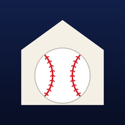

개인정보 처리방침
홈구장 · 시행일 2026년 9월 28일 (위치 정보 항목 추가)
홈구장(이하 "앱")은 이용자의 개인정보를 수집하지 않습니다.
1. 수집하는 정보
앱은 이름, 이메일, 전화번호, 위치, 기기 식별자, 사용 기록 등 어떠한 개인정보도 수집하거나 외부 서버로 전송하지 않습니다. 회원가입이나 로그인 기능이 없고, 광고·분석·추적 도구를 사용하지 않습니다.
2. 기기에 저장되는 정보
다음 정보는 이용자의 기기 안에만 저장되며, 개발자를 포함한 누구에게도 전송되지 않습니다. 앱을 삭제하면 함께 삭제됩니다.
- 선수별로 지정한 등장곡·응원가 정보
- 이용자가 가져온 음악 파일
- 응원팀, 방송 싱크, 나레이션 등 앱 설정
- 이용자가 고른 선수 사진
- 직관 인증 기록 (날짜, 구장 이름, 경기)
3. 위치 정보
'직관 인증' 버튼을 누를 때에만 현재 위치를 한 번 확인해, 가장 가까운 야구장 반경 안에 있는지 판단합니다. 위치 좌표는 저장하지 않고 외부로 보내지도 않으며, 인증된 구장 이름만 기기에 남습니다. 위치 권한을 허용하지 않아도 직관 인증을 제외한 모든 기능을 쓸 수 있습니다.
4. 외부 서비스
- 경기 정보: 경기 일정과 문자중계를 가져오기 위해 네이버 스포츠에 접속합니다. 이 과정에서 이용자의 개인정보는 보내지 않습니다.
- Apple Music: 이용자가 Apple Music 곡을 지정하면 Apple의 MusicKit을 통해 검색하고 재생합니다. Apple Music 이용 정보는 Apple 개인정보 처리방침을 따르며, 개발자는 이용자의 청취 기록을 받지 않습니다.
5. 아동의 개인정보
앱은 어떤 이용자의 개인정보도 수집하지 않으므로, 만 14세 미만 아동의 개인정보도 수집하지 않습니다.
6. 처리방침의 변경
이 처리방침이 바뀌면 이 페이지에 변경 내용과 시행일을 게시합니다. 개인정보를 수집하게 되는 변경이 있다면 앱 업데이트 전에 미리 알립니다.
7. 문의
개인정보 처리방침에 관한 문의는 아래 이메일로 보내 주세요.